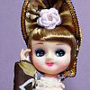
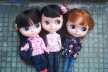
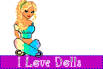
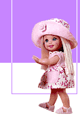

My Dollhouse
My Dollhouse
As a kid, I wasn't really a "doll girl" as I wasn't particularly interested in Barbies or Bratz outside the occasional roleplay with friends. I had more interest in miniatures that I could more easily make stories with, and most importantly, have lots and lots of little true-to-life items for. A family friend introduced me and my mom to American Girl though, and my interest in historical fiction and little realistic items collided, and I had to have one. Originally I wanted Kaya, but I was gifted Josefina that Christmas when I was 8. My mom told me later it was because she knew I'd want accessories and Kaya's were all large and expensive, lol. I absolutely adored her though, and two years later got my second doll, Felicity. Wanting to find more information about this line outside the once a year catalogue, I took to searching online, and that's where I found fansites and information about retired products, which made me very jealous even at the time.
After I aged out of the AG demographic, I stopped being into dolls again, and got into collecting action figures and other figurines. I got back into dolls by watching dolltube during Covid, and started collecting a small amount. Unfortunately for my wallet, I also got back into American Girl. My interest is still the historical girls and their stories and accessories :] Besides them I also like smaller customizable dolls like Nendolls. I'd like to make some of my OCs once I have more money and time!
I am also interested in getting into more doll lines, but I am *very* picky with what faces I like, so I haven't picked up a lot. Generally, for 14-18" dolls I focus on face and hair quality. With smaller dolls, I focus on articulation and fun gimmicks. (I love mermaid and other fantasy or animal based ones!) I would love a Carpatina Fantasy Doll and Stardust Classics Doll someday. Also a Dollfie or Smart Doll... if they were a third of the price T_T
   